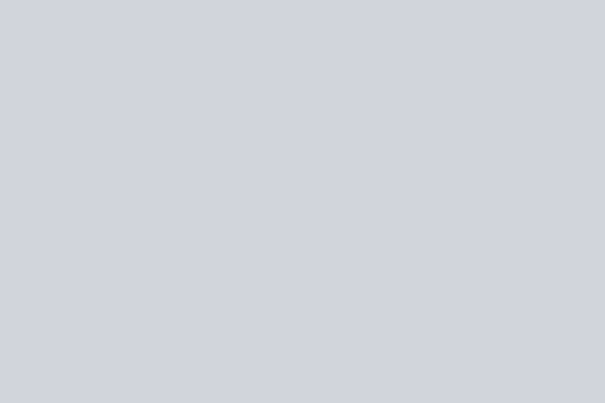

Vak opdracht
Opdracht 1
Op deze pagina komt later een opdracht uit mijn opleiding.

De opdracht
Hier beschrijf ik later wat de opdracht was.
Mijn aanpak
Hier leg ik later uit welke stappen ik heb ondernomen.
Resultaat
Hier toon ik later het resultaat van de opdracht.
Wat ik leerde
Hier beschrijf ik later wat ik heb geleerd en wat ik anders zou aanpakken.